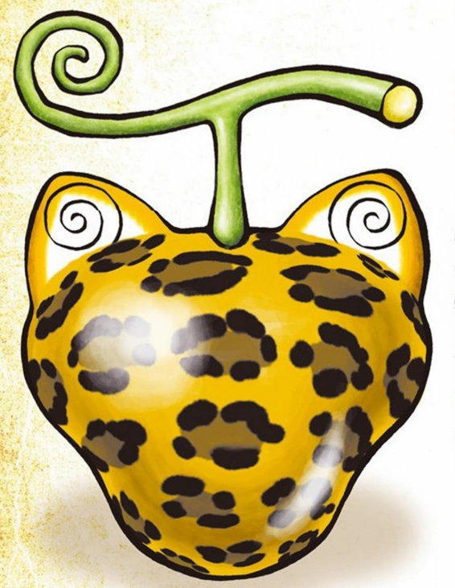

|
De Gomu Gomu no Mi is een duivelsfruit van het Paramecia-type die het lichaam van de gebruiker de eigenschappen van rubber geeft, waardoor hij in feite een rubberen mens wordt (ゴム人間, Gomu Ningen?). Oorspronkelijk heette de vrucht Hito Hito no Mi, model: Nika en geclassificeerd als een mythische vrucht van het Zoan-type waarmee iemand kan transformeren in de legendarische "Zonnegod" Nika (en zijn rubberachtige eigenschappen kan verwerven), voordat hij wordt hernoemd en opnieuw geclassificeerd door de Wereldregering om de waarheid te verbergen.Tegenwoordig weten alleen Imu en de Vijf Oudsten de ware aard van de vrucht, en het bestaan ervan is nooit ergens vastgelegd. |
 |
De Hebi Hebi no Mi, model: Yamata no Orochi is een mythische duivelsvrucht van het Zoan-type waarmee de gebruiker kan transformeren in een hybride en volledige versie van de Yamata no Orochi, een achtkoppige slang of draak in de Japanse mythologie. Het werd gegeten door Kurozumi Orochi, maar met zijn dood is de vrucht weer in omloop gebracht. |
 |
De Uo Uo no Mi, model: Seiryu is een mythische duivelsfruit van het Zoan-type waarmee de gebruiker naar believen kan transformeren in een hybride en volledige Azure Dragon. Beschreven als de "sterkste klasse van Devil Fruit", was het ooit een World Noble schat voordat het door Kaidou werd opgegeten, nadat Big Mom het had gestolen tijdens het God Valley Incident 38 jaar geleden. |
|  |
De Neko Neko no Mi, model: Leopard is een duivelsfruit van het Zoan-type waarmee de gebruiker naar believen kan transformeren in een luipaardhybride en een volledig luipaard, waardoor de gebruiker een luipaardmens wordt (ヒョウ人間, Hyō Ningen?). Het werd opgegeten door Rob Lucci. |